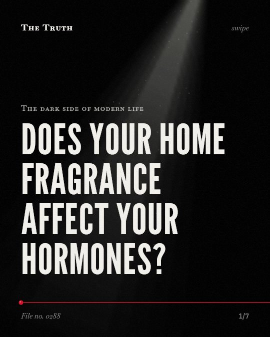

The dark side of modern life
Does your home fragrance affect your hormones?

Specific fragrances may cause premature breast growth in children.
Cases of premature thelarche resolved after stopping the use of lavender-containing fragrances in certain communities.
Supported. At least one solid peer-reviewed study. The evidence is mixed.
What the research found
Children who were regularly exposed to lavender or tea tree essential oils experienced the same risk of endocrine disorders as those who were not exposed.
“Children who were regularly exposed to lavender or tea tree essential oils experienced the same risk of endocrine disorders as those who were not exposed.”
Study, 2021. Hawkins et al., International Journal of Pediatrics and Adolescent Medicine.
The total risk of endocrine disorders among children exposed to lavender or tea tree essential oils (0.0194) did not differ from the risk of those unexposed (0.0069).
“Total risk of endocrine disorders among those exposed (0.0194) did not differ from the risk of those unexposed (0.0069).”
Study, 2021. Hawkins et al., International Journal of Pediatrics and Adolescent Medicine.
31 essential oils of culinary herbs and spices may be considered safe in terms of endocrine disruption involving receptors GR, AR and VDR.
“Hence, 31 EOs of culinary herbs and spices may be considered safe, in terms of endocrine disruption involving receptors GR, AR and VDR.”
Study, 2018. Bartoňková & Dvořák, Food & Function.
Cases of premature thelarche resolved upon cessation of lavender-containing fragrance exposure commonly used in Hispanic communities.
“We report cases of premature thelarche that resolved upon cessation of lavender-containing fragrance exposure commonly used in Hispanic communities.”
Experiment, 2019. Ramsey et al., The Journal of Clinical Endocrinology & Metabolism.
The toxicological significance of the minor effects observed on transcriptional activities of GR, AR and VDR is very low.
“In conclusion, although we observed minor effects of several EOs on transcriptional activities of GR, AR and VDR, the toxicological significance of these effects is very low.”
Study, 2018. Bartoňková & Dvořák, Food & Function.
The largest source of general population exposure to phthalates is dietary.
“The largest source of general population exposure to phthalates is dietary.”
Study, 2004. Fromme et al., Indoor Air.
The evidence on common oils is mixed.
While specific components show endocrine-disrupting activities in laboratories, large-scale studies show that regular exposure to lavender and tea tree oils does not significantly increase endocrine disorder risks in the general population.
Your home environment is not neutral.
That may be why certain products cause specific health issues even when large-scale data suggests they are safe for most people. The risk depends on the specific component and the individual.
This part is our reading of the evidence, not a finding.
The diffuser on your nightstand.
You turn it on before sleep. The mist fills the room. You assume the scent is only for relaxation. You do not see the chemical interaction with your hormones.
The honest summary
The evidence is mixed, showing that while specific components can have endocrine-disrupting activities in laboratory settings or specific clinical cases, they do not consistently cause endocrine disorders in the general population.
The studies vary significantly in scope, ranging from small case reports of specific conditions to large population-based prevalence studies.
What are you breathing in tonight?
Sources
- Iveta Bartoňková, Zdeněk Dvořák (2018). Assessment of endocrine disruption potential of essential oils of culinary herbs and spices involving glucocorticoid, androgen and vitamin D receptors. Food & Function. Study, cited 17 times.
- Hermann Fromme, Thomas Lahrz, M Piloty et al. (2004). Occurrence of phthalates and musk fragrances in indoor air and dust from apartments and kindergartens in Berlin (Germany). Indoor Air. Study, cited 416 times.
- Jessie Hawkins, Christy Hires, Elizabeth Dunne et al. (2021). Prevalence of endocrine disorders among children exposed to Lavender Essential Oil and Tea Tree Essential Oils. International Journal of Pediatrics and Adolescent Medicine. Study, cited 17 times.
- J Tyler Ramsey, Yin Li, Yukitomo Arao et al. (2019). Lavender Products Associated With Premature Thelarche and Prepubertal Gynecomastia: Case Reports and Endocrine-Disrupting Chemical Activities. The Journal of Clinical Endocrinology & Metabolism. Experiment, cited 106 times.
Also read for this file, not quoted
- Chakraborty et al. (2013). Application of phytochemicals as growth‐promoters and endocrine modulators in fish culture.
- Vandenberg et al. (2009). Bisphenol-A and the great divide: a review of controversies in the field of endocrine disruption.
This file was researched and drafted by software, then checked by rules a model cannot talk its way around: each quote above was matched word for word against the paper, and every number had to appear in it. How files are made.